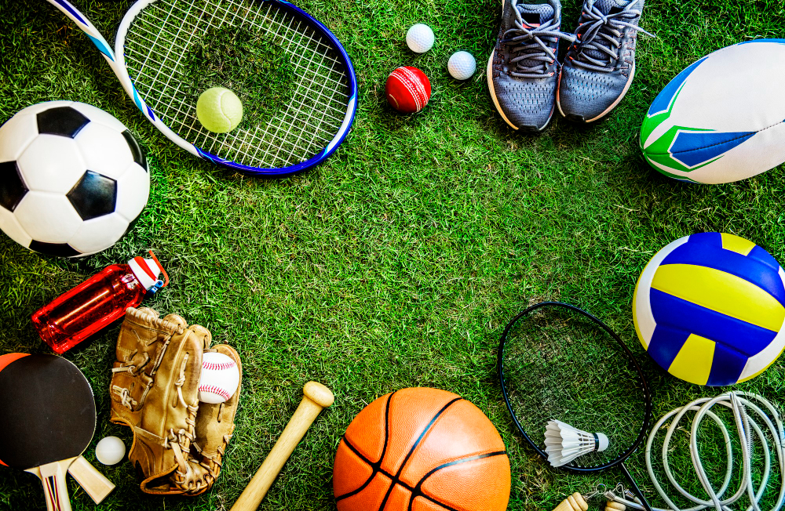

LO SPORT DI BRESCIA
Brescia offre numerose opportunità per praticare sport e mantenerti in forma, che tu sia un adulto alla ricerca di un’attività fisica stimolante, o un genitore che desidera far partecipare i propri figli a corsi sportivi divertenti e formativi. Dagli sport più tradizionali a quelli più popolari, dalle attività per sportivi professionisti a quelle meno impegnative, ci sono diverse opzioni tra cui scegliere per praticare sport a Brescia.
Vediamo insieme i migliori sport da praticare a Brescia, sia per gli adulti che per i bambini, per aiutarti a scegliere l’attività sportiva più adatta alle tue esigenze.

A Brescia sono situate diverse societa sportive che offrono istruttori o pratiche libere, tra le tante si fanno distinguere:
- Brescia Calcio
- Pallacanestro Brescia
- Brixia Tennis
Sitografia